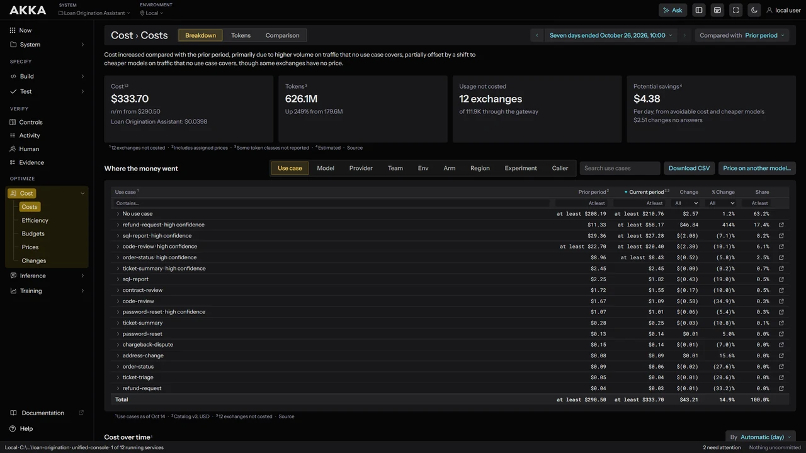
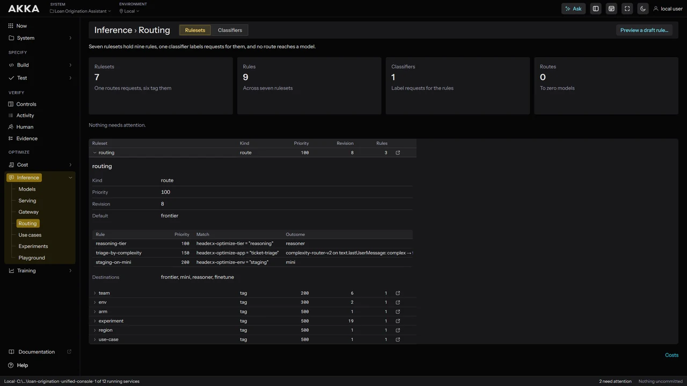
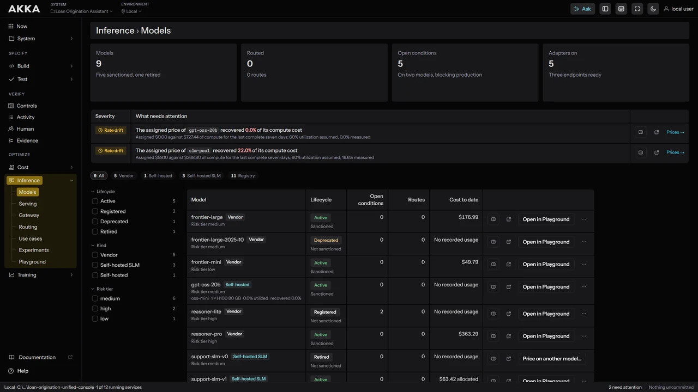
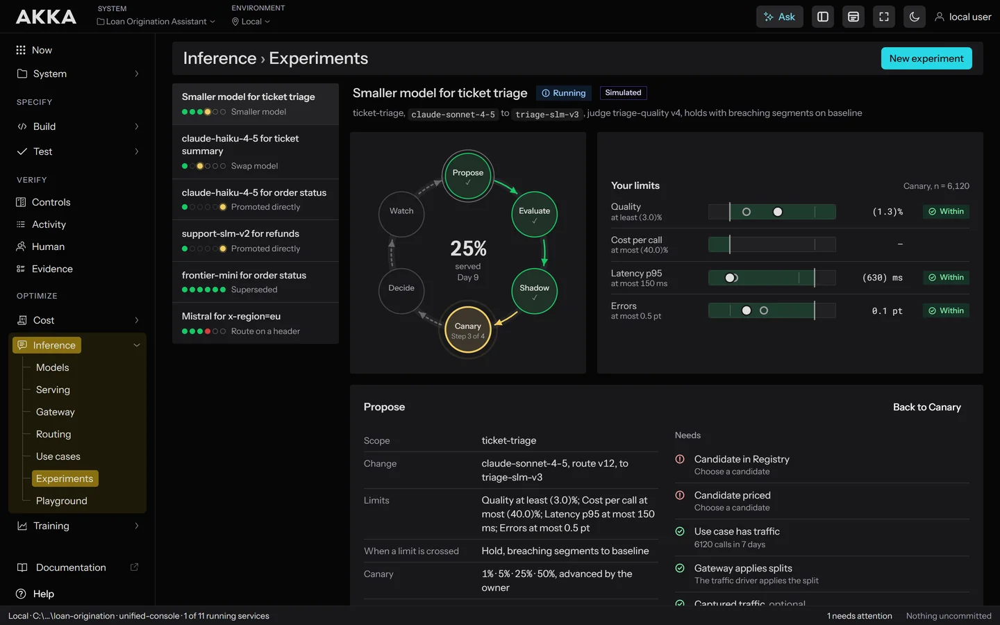
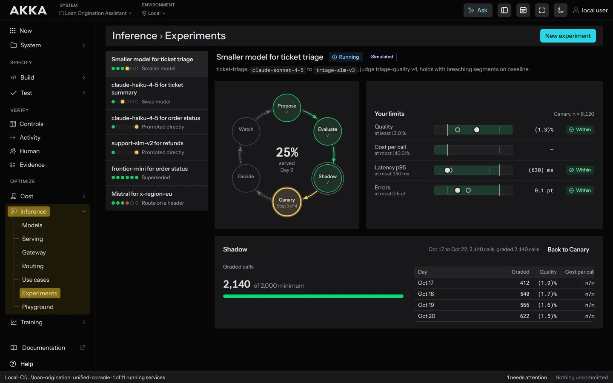
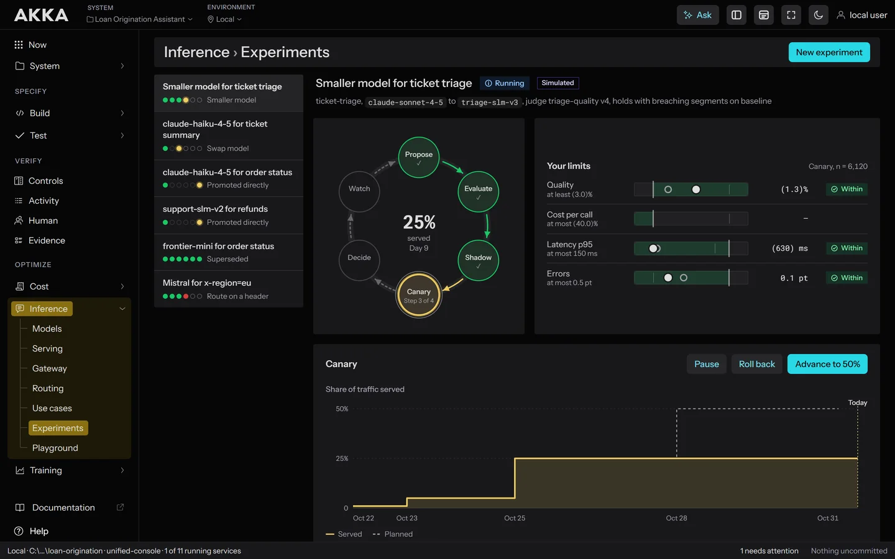
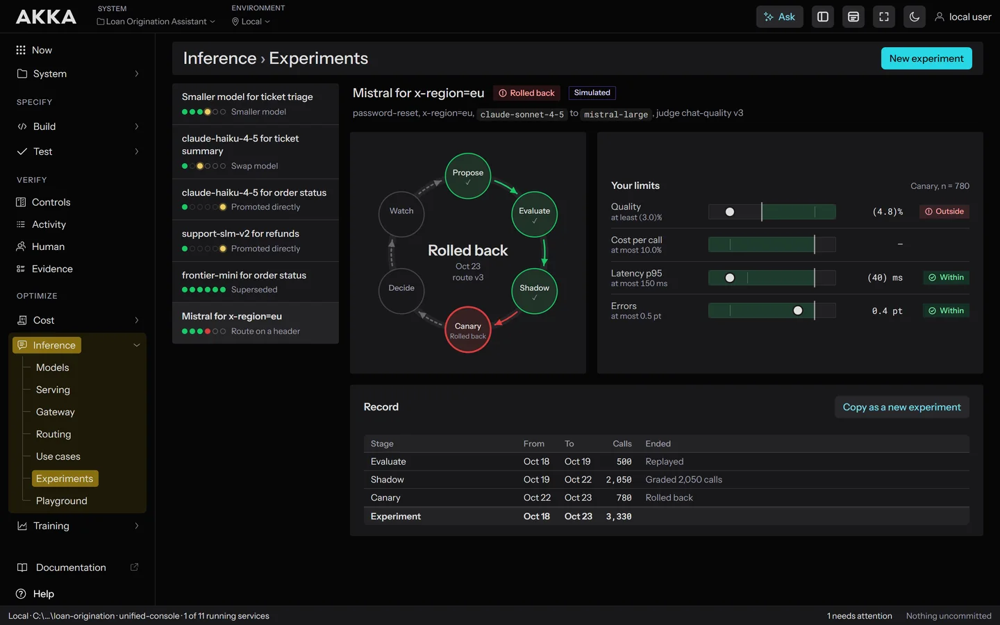
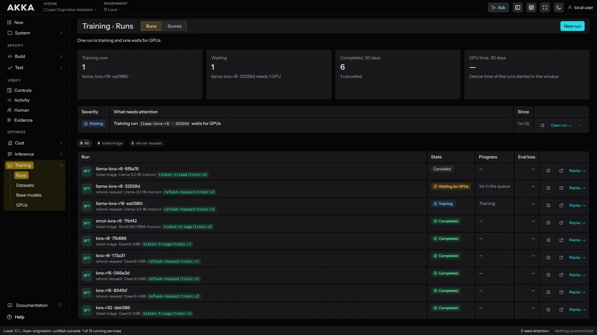

Own Your Intelligence.
Akka Optimize routes traffic to the best open-weight model and trains smaller ones on your data.
The models to build your own intelligence are here.
Open-weight models have reached frontier-level quality, and a comparable one follows every frontier release within a few months.
One loop that keeps making your AI better.
Akka watches the work that your agents do, routes each task to the model that fits it best, trains specialized models on your own data, and serves them. The loop runs continuously.
Full control over what your AI costs.
See what every AI call costs, attribute it to an owner, and route each task to the cheapest capable model under your budgets.

Route to the best model, from any vendor.
One gateway routes every request to the best model for the task, chosen from any vendor under your own policies, with frontier models available when the work calls for them.



Quality stays protected: if a candidate ever slips, Akka returns to the proven model right away.




Build intelligence from your own data.
Akka tunes an open-weight base (4–12B) with reinforcement learning against your interaction data, using your evaluations as the grader.

token drop ≥ target ✓
Every promotion comes with a before-and-after benchmark, measured by your own evaluations on your own traffic and saved to the audit record.
An integrated platform.
The platform uses smart shared abstractions to make every AI system as efficient as possible.
| Akka SDK is the component model for building agentic systems. | → |
| Akka Specify is spec-driven development tooling that builds an agentic system from plain-language specifications and checks every change against them. | → |
| Akka Verify applies any control to any AI system and guarantees its enforcement. | → |